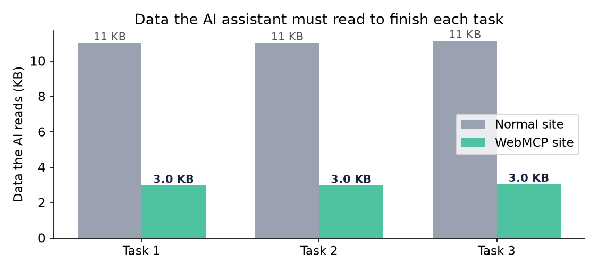
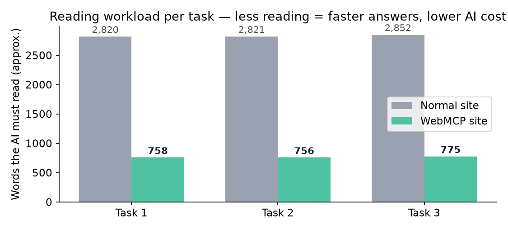

We constructed two functionally identical ecommerce sites differing only in agent-facing interface exposure, then executed three identical shopping tasks against both with a deterministic agent driver. The MCP-enabled variant reduced agent-side data ingestion by 74% (33,971 → 9,157 bytes over 3 tasks) at equal task success (3/3) and equal output correctness (identical product selections). This report documents the architecture, protocol implementation, test methodology, and measured deltas.
nginx (80/443, LE cert SAN: demonomcp + demowithmcp) ├─ demowithmcp.converso.work → 127.0.0.1:9502 (server.py, env MCP=1) └─ demonomcp.converso.work → 127.0.0.1:9501 (server.py, env MCP=0)
server.py, ~230 lines, zero third-party deps) serves both sites; an env flag gates the MCP layer. UI, catalog, cart and checkout logic are byte-identical — eliminating site-side confounders.@reboot crontab entries; in-memory state (carts/orders) — no database by design for the demo ceiling.Implemented the WebMCP concept (per W3C WebMachineLearning draft direction) as two endpoints:
| Endpoint | Role |
|---|---|
GET /.well-known/mcp | Discovery manifest: server metadata, transport (HTTP), tool registry with JSON-Schema inputSchema per tool |
POST /mcp | JSON-RPC 2.0 transport: initialize (protocolVersion 2025-06-18), tools/list, tools/call → returns both content[0].text (serialized) and structuredContent (native JSON) |
| Tool | Parameters (inputSchema) | Server-side behavior |
|---|---|---|
search_products | category ∈ {mice,laptops,phones}, max_price, min_rating, brand~, query~ | Filter+sort (rating desc), cap 10 |
get_product_details | id | Full record |
add_to_cart | id, qty=1 | Session-scoped cart mutation; returns count+total |
get_cart | — | Items + total |
checkout | — | Order creation, cart reset, returns order_id |
Session affinity via Mcp-Session-Id/X-Session-Id headers (in-memory dict[sid → cart]). CORS: POST/GET/OPTIONS with wildcard origin (demo ceiling — production would pin origins).
Exposes REST only: GET /api/products[?category=] (full catalog or category slice, unfiltered), POST /api/cart/add, POST /api/checkout. No discovery document, no schema, no server-side filtering. This models the status-quo path for browsing agents: endpoint discovery from markup/JS, full-catalog retrieval, client-side reasoning.
30 products (10 mice, 10 laptops, 10 phones), realistic Indian pricing (₹549–₹1,14,900), brand/spec/rating fields, static JSON. Skipped live scraping (bot-detection cost, zero demo value) — noted as upgrade path to live feeds.
Deterministic rule-based driver (compare.py) — deliberately NOT an LLM, to isolate mechanism cost (I/O volume, request count, discovery burden) from model variance. Both drivers encode the same decision policy; only the access path differs:
/ → regex-extract API surface from served JS → fetch full /api/products (30 items, ~11 KB) → filter/sort client-side → cart → checkout. Discovery cost is charged (the agent must parse the page to learn the API)./.well-known/mcp → initialize → tools/call search_products (server-filtered, ~10 items) → add_to_cart → checkout. Discovery+handshake charged per task (worst case; real agents cache).Meter wrapper: per-request count, accumulated response bytes, wall-clock. Session id pinned per task to make cart state coherent. Success assertion per task (e.g. task 2: pick == HP Pavilion 14 @ ₹52,990 — verified against catalog ground truth).
| Task | Site | Requests | Bytes read | Time (s) | Pick | Success |
|---|---|---|---|---|---|---|
| 1 — wireless mouse ≤ ₹1,500 | plain | 3 | 11,281 | 0.03 | Portronics Toad 32 (₹749) | ✓ |
| mcp | 4 | 3,030 | 0.03 | Portronics Toad 32 | ✓ | |
| 2 — cheapest laptop ≥ 4.3★ | plain | 3 | 11,283 | 0.03 | HP Pavilion 14 (₹52,990) | ✓ |
| mcp | 4 | 3,026 | 0.02 | HP Pavilion 14 | ✓ | |
| 3 — top-rated phone ≤ ₹30k + checkout | plain | 4 | 11,407 | 0.02 | Redmi Note 13 Pro (₹21,999) | ✓ |
| mcp | 5 | 3,101 | 0.03 | Redmi Note 13 Pro | ✓ | |
| Totals | 10 / 13 | 33,971 / 9,157 | 0.08 / 0.08 | identical picks | 3/3 / 3/3 | |


# ponytail: in-memory cart/order state — dies on restart; upgrade: sqlite/redis when multi-process.# ponytail: wildcard CORS — acceptable for a public demo with no auth; pin origins before production.# ponytail: no auth on /mcp — rate-limit + API key needed before public real-traffic exposure.spec in results (added mid-run) so agents can evaluate "wireless" serverlessly — a lesson in tool-schema design: agents only know what the result schema exposes.{} is truthy (body=None vs {} method dispatch), shared session-id for cart coherence, "mice" vs "mouse" lexical mismatch in category filters.# artifacts (srv1322534) /root/webmcp_demo/server.py # dual-mode server (MCP=1 gates the MCP layer) /root/webmcp_demo/compare.py # harness: Meter, run_plain, run_mcp, task checks /root/webmcp_demo/results.json # raw per-task/request metrics /root/webmcp_demo/report.json # aggregate summary # run: python3 /root/webmcp_demo/compare.py # live: https://demowithmcp.converso.work/.well-known/mcp (manifest) # https://demonomcp.converso.work/api/products (control API)
Artifacts: /root/webmcp_demo/ · Companion layman report: WebMCP_Comparison_Report.pdf · Contact: Hermes Agent on srv1322534